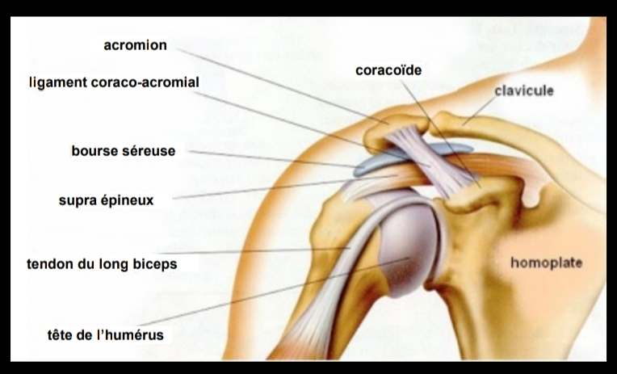
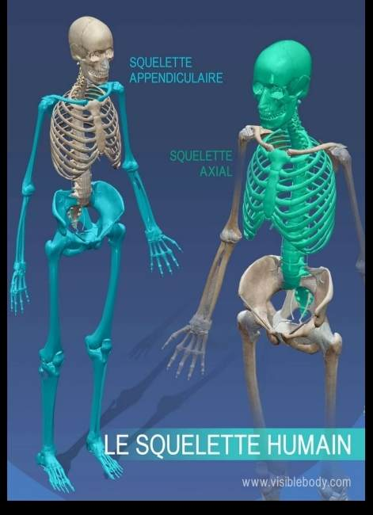
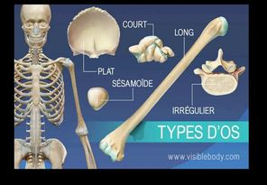

Système musculosquelettique
Le système musculosquelettique (aussi appelé système locomoteur) donne au corps sa forme, sa structure, sa mobilité et sa stabilité. Il se compose du système squelettique (os, cartilage, ligaments, bourses séreuses, capsules articulaires) et du Système musculaire (muscles et tendons). Sa connaissance est la base de l'ergonomie physique : aucun diagnostic crédible de TMS n'est possible sans s'appuyer sur l'anatomie.
Table des matières
- Vue d'ensemble
- Le système squelettique
- Cartilage, ligaments, bourses, capsules
- Lien avec les TMS
- Application terrain
- Ressources
Vue d'ensemble
{kind=link}

Toucher l'image pour l'agrandirLe système musculosquelettique se compose de deux grands sous-systèmes
- Système squelettique : os, cartilage, ligaments, bourses séreuses, capsules articulaires.
- Système musculaire : muscles et tendons. Voir Système musculaire.
Ces structures s'articulent autour des Articulations qui permettent les mouvements.
Le système squelettique
{kind=link}

Toucher l'image pour l'agrandirFonctions des os
| Fonction | Description |
|---|---|
| Support | Le squelette est l'armature du corps, base du mouvement |
| Protection | Ossature protectrice des organes vitaux (crâne, cage thoracique) |
| Motrice | Les os agissent comme leviers, mobilisés par les muscles |
| Physiologique | Hématopoïèse (production des cellules sanguines), réserve de minéraux |
Deux sections
- Squelette axial : crâne, cage thoracique, colonne vertébrale.
- Squelette appendiculaire : membres supérieurs et inférieurs.
{kind=link}

Toucher l'image pour l'agrandirClassifications des os
| Type | Exemples |
|---|---|
| Longs | Fémur, humérus |
| Courts | Os carpiens, os tarsiens |
| Plats | Sternum, omoplate (scapula) |
| Irréguliers | Vertèbres, os maxillaire |
Chaque os s'articule avec au moins un autre os via une articulation.
Cartilage, ligaments, bourses, capsules
Le cartilage
Tissu conjonctif non vascularisé, élastique et résistant. Trois types
- Cartilage articulaire : recouvre les surfaces articulaires.
- Cartilage fibreux : absorbe les chocs (ex. disques intervertébraux, voir Anatomie et biomécanique du dos).
- Cartilage élastique : rôle structurel (oreilles, larynx).
Les ligaments
Tissus conjonctifs denses qui joignent les os entre eux et apportent un support aux Articulations. Très peu vascularisés, donc cicatrisation lente après lésion.
Les bourses séreuses
Petits sacs remplis de liquide qui réduisent la friction entre structures (tendons, os, peau). Une inflammation porte le nom de bursite.
Les capsules articulaires
Enveloppent les articulations synoviales et sécrètent le liquide synovial qui réduit la friction entre les surfaces articulaires.
Lien avec les TMS
Les troubles musculosquelettiques touchent une ou plusieurs de ces structures.
| Structure | TMS typique |
|---|---|
| Tendon | Tendinite, ténosynovite |
| Bourse | Bursite |
| Muscle | Contracture, lombalgie, cervicalgie |
| Nerf | Syndrome du tunnel carpien (compression nerveuse) |
| Vaisseau | Syndrome de Raynaud (compression vasculaire) |
| Cartilage / disque | Hernie discale |
| Ligament | Entorse |
Voir TMS (troubles musculosquelettiques) pour la classification complète.
Application terrain
La connaissance de l'anatomie permet au conseiller SST de
- Cibler les régions à risque selon les postes : épaule du foreur (forage bras au-dessus), dos du manutentionnaire, poignet du soudeur, genou du mineur en chantier bas.
- Documenter les lésions avec précision dans les rapports d'enquête CNESST.
- Communiquer avec les médecins du travail, physiothérapeutes et ergothérapeutes lors d'un retour au travail.
- Comprendre les statistiques : 65,7 % des lésions de manutention touchent le dos, structure particulièrement vulnérable en mine.
Les postes typiquement à risque en mine sollicitent intensément certaines structures
| Poste | Structures particulièrement sollicitées |
|---|---|
| Foreur, profil RPS et leadership de chantier jumbo | Épaule, coude, poignet, rachis cervical |
| Aide-foreur, profil RPS, chargeur d'explosifs | Rachis lombaire, épaule |
| Boulonneur | Épaule, cou, poignet |
| Opérateur chargeuse souterraine | Rachis lombaire (Vibrations corps entier) |
| Mécanicien atelier | Épaule, poignet, dos |
Ressources
| Document | Type | Source |
|---|---|---|
| Cours SST 1162 - S2 - Système musculosquelettique | Cours | UQAT |
| Gray's anatomie - Le manuel pour les étudiants | Manuel | Standring |
| Anatomy and Physiology | Manuel | McGuinness, 2018 |
Articles wiki connexes
Pages qui pointent ici (7)
- 🏠 Wiki Ergonomie, mines Ergonomie
- Anatomie et biomécanique Ergonomie
- Anatomie et biomécanique du dos Ergonomie
- Articulations Ergonomie
- Biomécanique Ergonomie
- Système musculaire Ergonomie
- TMS (troubles musculosquelettiques) Ergonomie